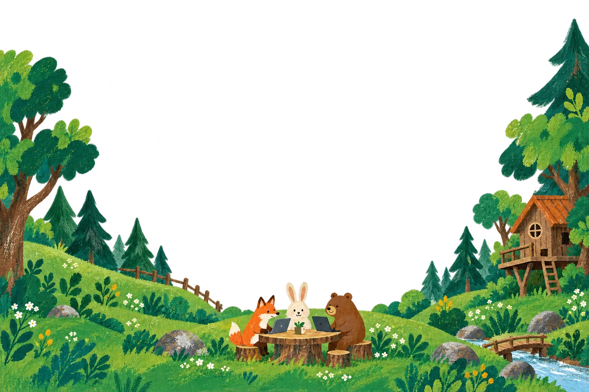

01
学んだ先で、
実案件に挑戦する。
SHINJIDAIが案件獲得を進め、学習後にスキルに合う実案件へ参加する機会をつくります。チームで業務を理解し、開発や納品に携わりながら、実務経験を積んでいきます。
フリーランスを目指す方の、実務型AI開発スクール
案件獲得に悩んでいるあなたへ。
基礎を学び、チームで実案件に挑戦する。
現場で使えるスキルと経験を、ここから。

フリーランスを目指して勉強しているのに、案件が取れない。
実務経験がないから、自信を持って提案できない。
森のAI開発部は、学習から実案件への参加までをつなぐ
実務型AI開発スクールです。
基礎を身につけたら、スキルに合った案件にチームで挑戦。
実務を経験しながら、仕事に使える力を育てます。
開発スキルに加えて、業務を理解する力、提案する力、
納品までやりきる力も。
実務を通して価値を届けられる「グロースAIエンジニア」を目指します。
実務への参加機会と、スキルを伸ばすサポートを。
SHINJIDAIが案件獲得を進め、学習後にスキルに合う実案件へ参加する機会をつくります。チームで業務を理解し、開発や納品に携わりながら、実務経験を積んでいきます。
一人ひとりに定期的な1on1。わからないことも、進め方の悩みも話しながら、今のあなたに合った次の一歩を見つけます。
お客さまの要望を聞き、必要な機能を考え、つくって確かめる。提案から開発・納品までの実践を通じて、現場で必要な判断や進め方を学び、次の仕事にも活かせるスキルを育てます。
※ 実案件への参加は、案件状況やスキル等に応じて調整します。案件参加・収入を保証するものではありません。
※ 1on1は開始3ヶ月以降、月1回にするなど、学習状況に応じて頻度を調整します。
今のあなたに合う場所から。3つのコースで、じっくり育とう。
AI開発の基礎を学ぶ
「はじめて」からで大丈夫。AIと一緒に手を動かし、つくる楽しさを知るコース。
業務を理解し、開発する
つくる前に、仕事を知る。現場の困りごとを整理して、使える仕組みに変えるコース。
提案から納品まで、チームで
仲間と役割を分担し、お客さまに価値を届ける。実務の一連の流れに取り組むコース。
どこから始めるか迷っても大丈夫。経験や目標を聞きながら、一緒に考えます。
受講料・期間・具体的なカリキュラムは、詳細が決まり次第ご案内します。
SHINJIDAIには、未経験から業務を学び、実際に収入につなげてきたメンバーがいます。
何を学び、どのように実案件へ参加し、収入につなげたのか。案件を通して、どんなスキルが身についたのか。個別面談では、こうした経験をもとに、あなたの学習から実務への道のりを一緒に考えます。
※ 上記はSHINJIDAIでの経験であり、本スクールの卒業生実績ではありません。成果には個人差があります。
自分の「これから」を相談する ↗学習で土台をつくり、実案件で経験を積み、次の仕事につなげる。
個別面談で経験と目標を整理。自分に合うスタートを見つけます。
基礎から実践へ。1on1で振り返りながら、開発経験を積みます。
学習状況とスキルを確認し、条件の合う実案件にチームで参加する機会をつくります。
実務で得たスキルと経験を、次の提案や案件獲得、収益化につなげていきます。
うまく進んだ日も、少し立ち止まった日も。
加藤さんを含む運営メンバーが、定期1on1で伴走します。
学習のこと、仕事のこと、これからのこと。
あなたのペースを、一緒につくっていきましょう。
森の1on1ノート
はい。どんぐりコースでは、AI開発の基礎から取り組みます。個別面談でこれまでの経験や学習に使える時間を伺い、始め方を一緒に考えます。
基礎から始めたい方はどんぐり、業務に役立つ開発を学びたい方はわかば、チームで提案から納品まで取り組みたい方はけやきが目安です。面談時に現在地を整理してご案内します。
そうした方も対象です。個別面談で今のスキルや経験を確認し、必要な学習と実務へのステップを一緒に整理します。SHINJIDAIが案件獲得を進め、学習後にスキルに合う実案件へチームで参加する機会をつくります。参加は案件状況や必要なスキル等に応じて調整します。
案件参加や収入を保証するものではありません。SHINJIDAIで案件獲得を進め、案件状況・必要なスキル・学習状況などに応じて、参加機会をつくっていく方針です。
学習の進み具合や技術的なつまずき、実務への挑戦に向けた目標などを相談できます。基本は2週間に1回、開始3ヶ月以降は月1回にするなど、状況に合わせて調整します。
受講料・期間・募集スケジュールは現在準備中です。決まり次第ご案内します。個別面談では、ご希望や目標に合った学び方についてお話しします。
案件獲得や、スキルへの不安も話してみませんか。
今の経験に合う学び方と、実案件へのステップを一緒に考えます。
学習から実案件への参加まで、具体的な流れをご案内します。